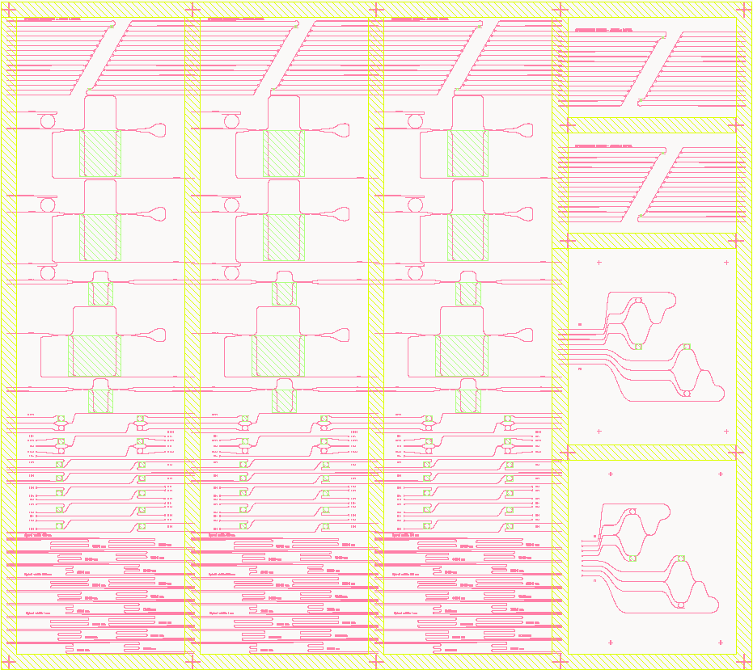
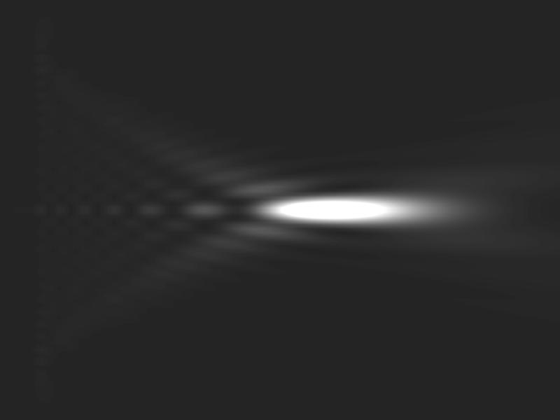
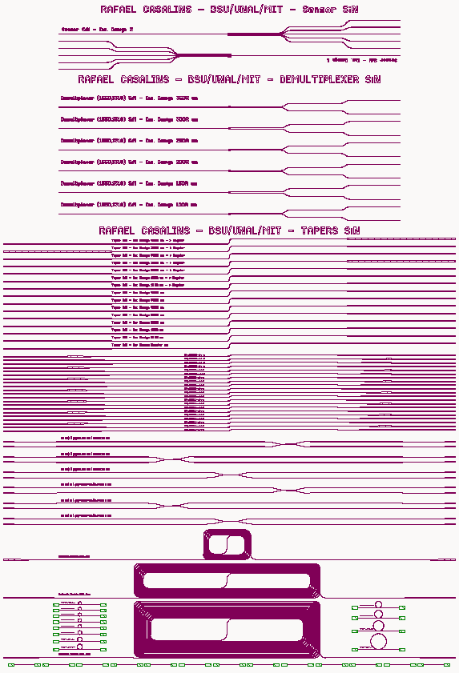
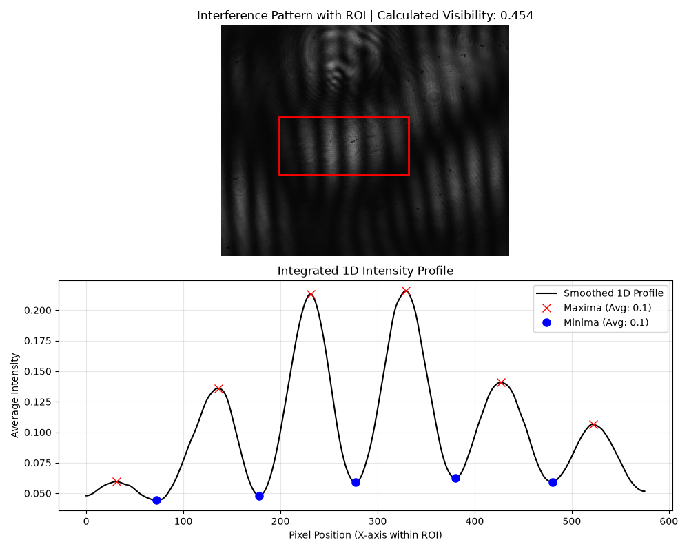
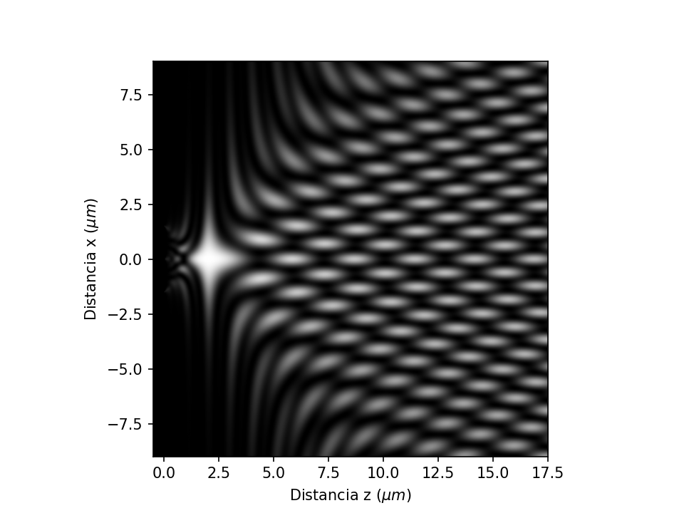

About
I'm a Physicist Engineer and Master's student specializing in integrated photonics, layout automation, and inverse design. My work bridges behavioral models with physical chip layouts — moving from custom Python frameworks, through 2D templates for rapid prototyping, to high-fidelity 3D electromagnetic simulation and foundry-level tape-outs.
I love optics, programming, and running experiments with light. I work comfortably across disciplines — with physicists, engineers, and fabrication teams — and I'm currently looking for research opportunities in optics and photonics that combine experimental, theoretical, and computational work.

- Institution National University of Colombia
- Program MSc, Engineering Physics
- Languages Spanish (native), English
- Email rcasalins@unal.edu.co
- ORCID 0000-0002-0485-0091
Research publications
Papers & proceedings
Peer-reviewed and conference work on non-paraxial focusing, inverse-designed photonic materials, and optics outreach.
Non-paraxial focusing by microlenses under arbitrary spatial coherence
Rafael A. Casalins-Hernández & Román Castañeda — Óptica Pura y Aplicada, 59.1, p. 51225
Inverse Design for SiN and GeSbS
Rafael A. Casalins-Hernández et al. — Frontiers in Optics + Laser Science (FiO, LS), JTu4A.12
Non-paraxial focusing by microlenses
Rafael A. Casalins-Hernández & Román Castañeda — Frontiers in Optics + Laser Science (FiO, LS), JTu5A.52
Outreach experiments guide for an optic show to pre-college level by Medellín student chapter
Pablo Bedoya-Ríos et al. — ETOP 2023, p. 127230M
Study on Quantum Entanglement Generation in GeSbS Chalcogenide Glass
Pablo Bedoya-Ríos et al. — Optica Quantum 2.0 Conference and Exhibition, QTh2A.5
Applied research
Projects & research groups
End-to-end photonic design work, from full-wave simulation to fabrication-ready layouts, alongside ongoing affiliations with three research groups.

Photonic IC Designer — FOTON-IA Project
Mar 2026 – Jul 2027Ruta N & G8 Group
- End-to-end design of integrated photonic sensors for real-time wastewater monitoring and energy recovery in the Aburrá Valley.
- Full-wave EM simulations (FDTD/FEM) in Lumerical, COMSOL, and Meep to optimize sensor sensitivity.
- Fabrication-ready GDS layouts via GDSfactory, adhering to foundry-specific DRC.
- Multi-institutional collaboration with UdeA, ITM, UdeM, and UNAL.

Non-paraxial focusing at the integrated photonics scale
Jul 2025 – Jun 2026FPIT · Project No. 5.276
- High-fidelity free-space simulations of light focusing through micro-nano lenses at the non-paraxial scale.
- Evaluated focusing capabilities of micro-scale optical elements for next-generation photonic circuits.
- Applied a specialized non-paraxial propagation algorithm developed with Prof. Román Castañeda's group.

CHIRP
Jul 2023 – presentBridgewater State University · P.I. Samuel F. Serna O.
Development of devices using inverse-design methodologies to improve nonlinear integrated photonic circuits.

Fotónica y Opto-electrónica
Jul 2025 – presentNational University of Colombia · P.I. Pedro Ignacio Torres
Experimental support in pulse width measurement, spatial coherence characterization, and integrated photonic circuit design, under Dr. Rodrigo Acuña.

Procesamiento Opto-digital
Jul 2020 – Jun 2026National University of Colombia · P.I. Jorge Garcia-Sucerquia
Evaluation of non-paraxial optical fields for micro-nano lenses, under Dr. Román Castañeda.
Code & simulation
Open projects
Python and Wolfram Language tools built for fiber-mode analysis and geographic modeling.
Generic Optical Fiber — Simple Mode Analysis
Python tooling for solving and visualizing guided-mode profiles of a generic step-index optical fiber.
Corning SMF-28 — Mode Analysis
Mode-solving workflow applied to the industry-standard Corning SMF-28 single-mode fiber.
Academic journey
Education & teaching
MSc in Engineering Physics
National University of Colombia · Advisor: Samuel F. Serna O. (Bridgewater State University)
- Developing gradient-based inverse-design methodologies to optimize nonlinear integrated photonic circuits using custom Python frameworks.
- Designed and submitted photonic circuits for a foundry-level tape-out with AIM Photonics (MIT collaboration) on a 220 nm SiN platform.
- Built robust simulation workflows using 2D templates for rapid prototyping before scaling to high-fidelity 3D EM simulations in Tidy3D and Lumerical.
BSc in Engineering Physics
National University of Colombia · Advisor: Román Castañeda
- Gained expertise in instrumentation and applied physics problem-solving.
- Specialized in optics and photonics through Photonics and Optical Fibers, and Optical Coherence Theory.
Assistant Professor
National University of Colombia
- Physics Laboratories for Oscillations, Waves and Optics — prepared and organized coursework, proposed new optics experiments.
- Mechanical Physics Laboratories (Sep – Dec 2025) — organized classical mechanics coursework for undergraduates.
Academic Tutor
National University of Colombia — Operations Research · Multi-variable Calculus
Toolkit
Skills
Community
Memberships & activities
Memberships
- OPTICA Formerly OSA Jun 2019 – present
- SPIE The International Society for Optics and Photonics Jun 2019 – present
Chapter roles
- Secretary Optics Student Chapter, OPTICA & SPIE 2024 – 2025
- President Optics Student Chapter, OPTICA & SPIE 2023
- Treasurer Optics Student Chapter, OPTICA & SPIE 2022
Symposiums
- 10th Int'l Symposium "Optics & its applications" ICTP Dec 2022
- SubOptic Latam 2022 SubOptic Foundation Nov 2022
Get in touch
Contact
Open to research collaborations, PhD opportunities, and conversations about integrated photonics. Reach out directly or use the form.
- Email rcasalins@unal.edu.co
- LinkedIn in/rcasalins
- GitHub rcasalins
- Scholar Google Scholar
- ORCID 0000-0002-0485-0091